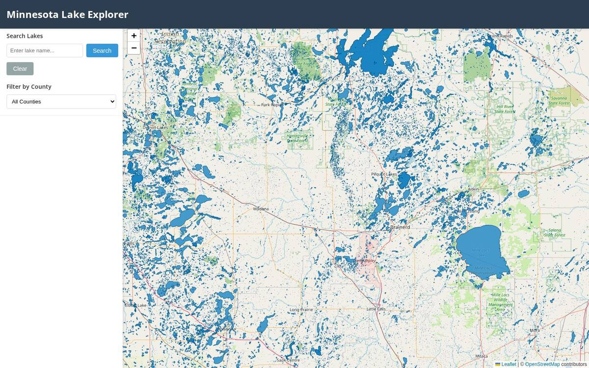

Minnesota
Lakes on Chain
Collect lakes. Verify catches. Give the data back to the state.

- Role
- Founder, data engineering, front end
- Stack
- Leaflet, vanilla JS, Python + pandas for data prep
- Data
- Minnesota DNR lake metadata, fish catch and length surveys
- Year
- 2025
OVERVIEW
Minnesota is the land of 10,000 lakes, and I wanted to see all of them at once. Minnesota Lakes on Chain started as an interactive map of every lake in the state, with the Department of Natural Resources' own data on each one: area, max depth, shoreline length, and which fish are actually in it.
It's also the start of something bigger: a place where you can collect lakes, and where anglers are rewarded for fishing and verifying their catches. That catch data then goes back to the Minnesota DNR, so the app becomes a public good for the state.
FEATURES
- Interactive Leaflet map with clustered markers for every lake.
- Search by name and filter by county, lake size and fish species.
- Lake detail: area, depth, shoreline, fish species with catch and length data.
- Sentinel lake and border-water designations, plus fish consumption advisories.
- One-tap directions in Google Maps or Bing Maps.
- Works on desktop and phone.
THE DATA
The DNR publishes its lake data as a pile of spreadsheets and geopackages: 2024 lake metadata, a statewide catch file, fish length surveys, sentinel and border-water lists, and county borders. I wrote Python preprocessing scripts that join them on lake ID, remove duplicate fish records and put out one consolidated dataset the browser can load directly, with no backend.
WHAT'S NEXT
Verified catches. An angler logs a catch, it gets verified, they earn a reward, and the record goes back to the DNR. I've pitched the vision to the Minnesota blockchain community as the on-chain side of the project.
More Projects